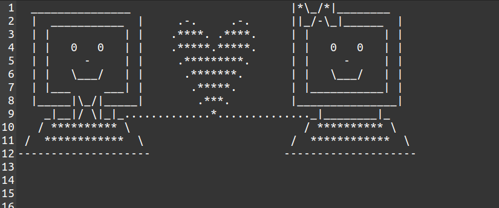

My experience implementing File Transfer Protocol in Python
Check out the source code for this project on GitHub
File transfer protocol is an application-layer protocol used to transfer files between two systems in a network. Being one of the first file-transfer protocols ever, it does not take security concerns into account and by default, the communication is considered insecure. Apart from file transfer, FTP also allows other file operations such as copy, move and delete. Thus, in many ways, it falls behind its successors like FTPS and SSH, but is an interesting protocol to implement when learning about Computer Networks.
Interestingly, each FTP connection uses two ports, usually # 20 and # 21, for data and command/control respectively. In my project, I emulated something similar using two sockets to achieve a similar 'separation of concerns' model.
FTP commands supported
- NLIST - Returns a list of file names in a specified directory
- CWD - Change working directory
- RETR - Retrieve a copy of the file
- STOR - Accept the data and to store the data as a file at the server site
Implementing ls-like FTP command NLIST
Once the 'NLIST' prefix is detected in the client's message, the NLIST function is called in the server side. As seen below, this function checks if the clients specifies a directory along with the command, and accordingly changes the path to the mentioned directory. In case no such directory is mentioned, it simply displays the current working directory.
def NLIST(*dirpath):
if dirpath[0] != "null":
try:
os.chdir(os.path.abspath(os.path.realpath(os.path.join(curr_dir, dirpath[0]))))
os.chdir(curr_dir)
print("showing contents of :")
return os.path.abspath(os.path.realpath(os.path.join(curr_dir, dirpath[0])))
except:
return "invalid directory name"
elif dirpath[0] == "null":
print("showing contents of :")
return curr_dir
else :
#the code never reaches here, testing
print('testing, ignore!')
return "invalid directory name"
After NLIST returns the path of the directory mentioned by the client (or the pwd otherwise), the code below displays the actual contents in that directory.
path_status = NLIST(direc)
print(path_status)
if path_status != "invalid directory name":
string = ' '
cache = os.listdir(path_status)
if len(cache) != 0:
string += cache[0]
cache.pop(0)
for item in cache:
string+=', '
string=string+item
print("The contents of the requested directory are :")
print(string)
connectionSocket.send(string.encode())
else:
string = "invalid directory name"
connectionSocket.send(string.encode())
.. and this is the obvious first file to transfer once the protocol was implemented.
